Proyectos
Yepsy - Full-Stack E-Commerce Platform
Plataforma de comercio electrónico inspirada en Amazon, diseñada para ofrecer una experiencia de compra fluida y responsiva. Este proyecto Full-Stack incluye gestión de productos, carrito de compras, pasarela de pago simulada, panel de administración, soporte al cliente y sistema de devoluciones, todo ello internacionalizado (Español/Inglés).
Roles y funcionalidades
- Usuario (USER): Explorar productos, gestión de carrito, historial de pedidos y tramitación de garantías.
- Administrador (ADMIN): Panel de gestión para productos, tickets de soporte, devoluciones y administración de roles.
- Responsive Design: Interfaz fluida que se adapta perfectamente a dispositivos móviles, tablets y escritorio.
- Internacionalización (i18n): Soporte multi-idioma (ES/EN) integrado desde el contexto de React.
- Buscador Inteligente: Barra de búsqueda predictiva con historial de consultas.
- Carrito Avanzado: Validación de stock en tiempo real y persistencia de artículos seleccionados.
- Atención al Cliente: Sistema integrado de tickets con envío de notificaciones automáticas vía SMTP.
Tecnologías utilizadas
- React.js & Vite → Desarrollo de la interfaz de usuario SPA con compilación ultrarrápida
- React Router DOM & Context API → Enrutamiento dinámico y gestión de estado global para i18n
- Axios & Lucide React → Consumo de API RESTful HTTP e iconografía vectorial fluida
- Java 21 & Spring Boot 3 → Construcción del backend del ecosistema y control de la lógica de negocio
- Spring Data JPA & Hibernate → Mapeo objeto-relacional (ORM) y persistencia fluida de datos
- PostgreSQL 15 → Base de datos relacional robusta elegida para producción
- Docker & Docker Compose → Orquestación de contenedores e infraestructura unificada (API + PostgreSQL)
- Maven → Herramienta utilizada para la gestión de dependencias y construcción del proyecto backend
Cómo ejecutar el proyecto
- Clonar el repositorio:
git clone https://github.com/Carlostarvil/yepsy.git - Backend y Base de Datos (Docker):
- Abrir una terminal en la carpeta raíz del proyecto y acceder a la carpeta:
cd .\amazon\ - Levantar la infraestructura ejecutando:
docker-compose up -d --build(descargará imágenes, compilará Java e iniciará PostgreSQL en el puerto 5433).
- Abrir una terminal en la carpeta raíz del proyecto y acceder a la carpeta:
- Frontend (NPM):
- Abrir una nueva terminal y dirigirse a la carpeta correspondiente:
cd .\amazon-frontend\ - Instalar los paquetes necesarios:
npm install - Iniciar el servidor de desarrollo local:
npm run dev(disponible enhttp://localhost:5173).
- Abrir una nueva terminal y dirigirse a la carpeta correspondiente:
- Gestión e Inicialización de Base de Datos:
- Para crear un usuario administrador inicial, conéctate a la BD (puerto 5433, usuario: postgres, clave: 12345) y ejecuta:
INSERT INTO users (email, password, name, role) VALUES ('admin@yepsy.com', '1234', 'admin', 'ADMIN');
Capturas de pantalla
.png)
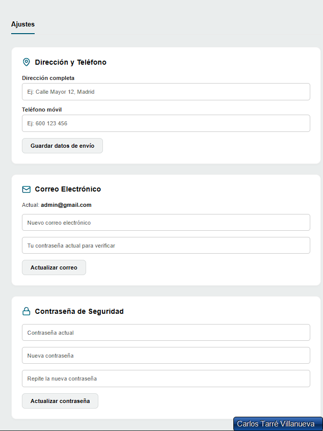
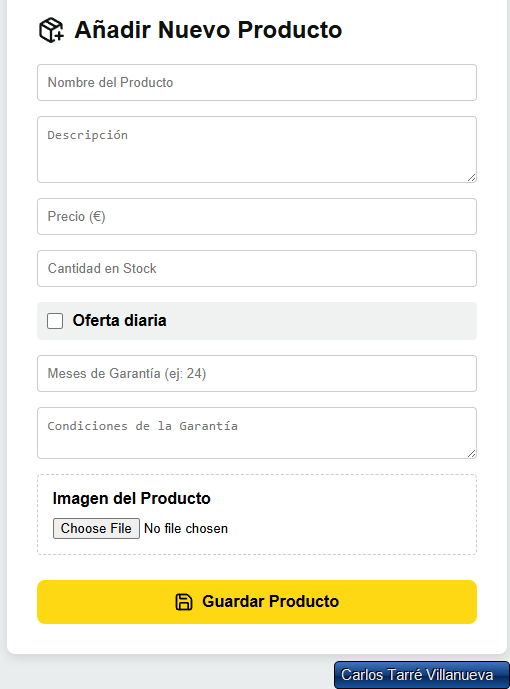
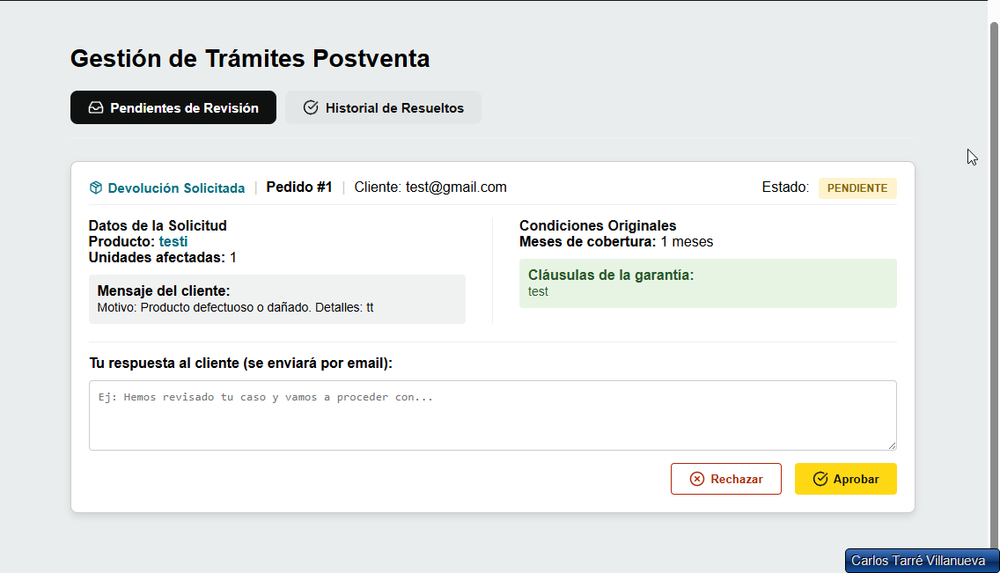
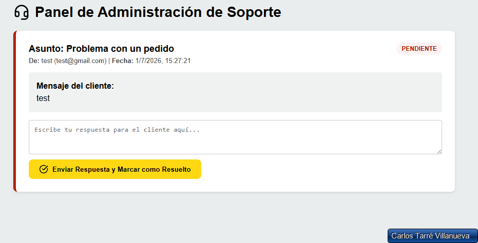
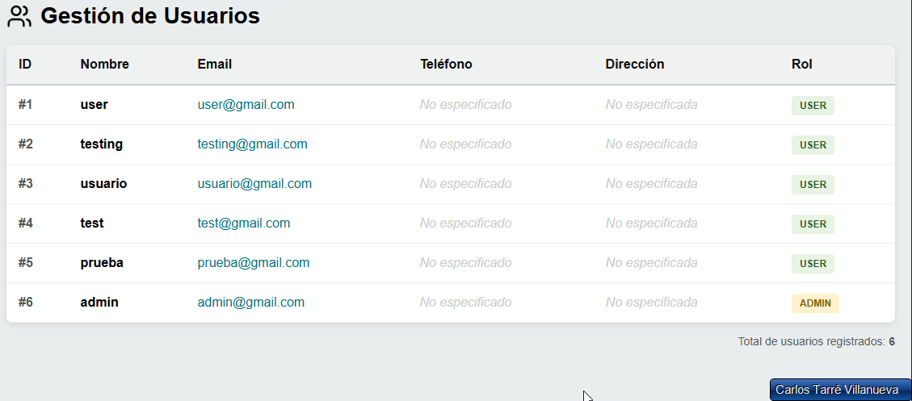

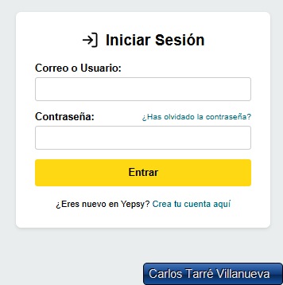
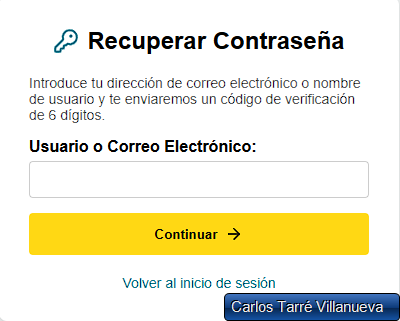
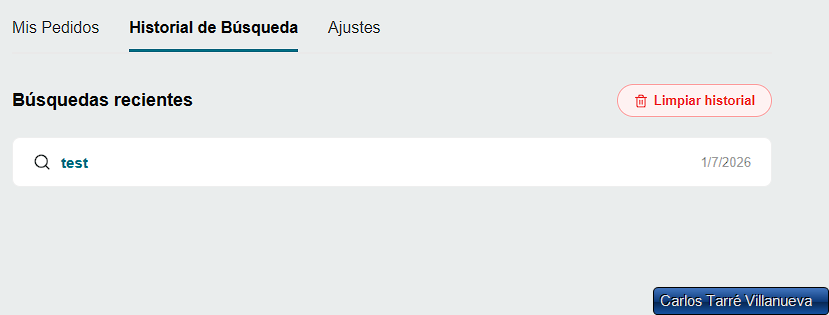
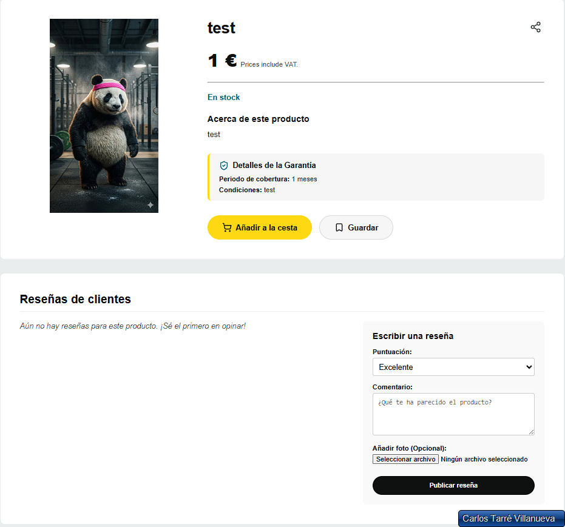
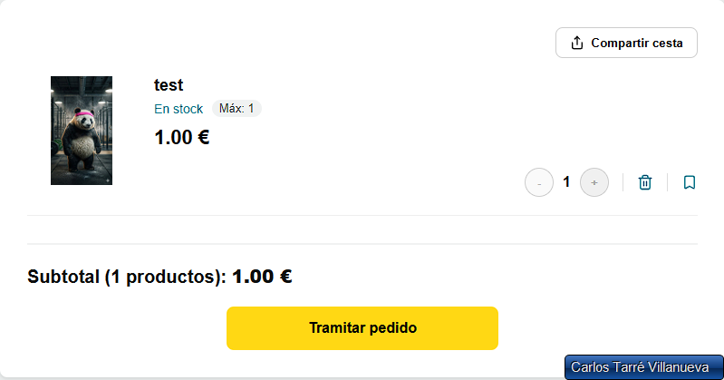
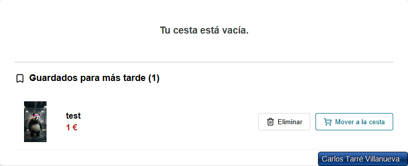
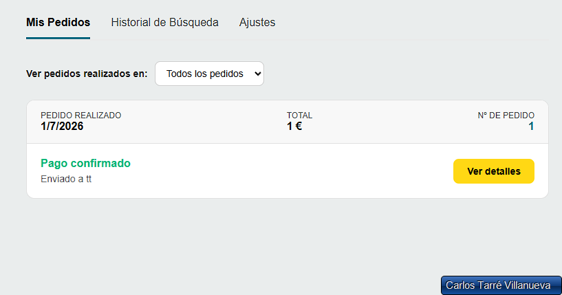

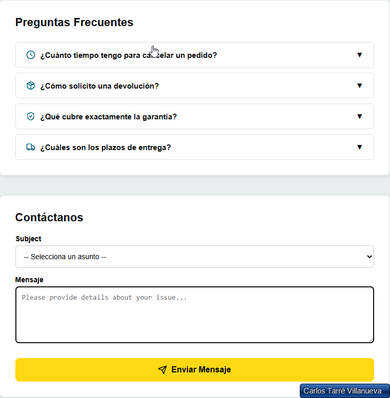
Ticket Booking API Pro
Robusta API RESTful diseñada para la gestión de eventos y venta de entradas en entornos de alta concurrencia. Este proyecto simula el comportamiento del motor central de una plataforma de gran envergadura estilo Ticketmaster, implementando las mejores prácticas de la industria backend moderno y un panel de control interactivo para la gestión de datos.
Roles y funcionalidades
- Usuario (USER): Registro público automático, navegación de eventos disponibles y compra segura de entradas con control de protección ante sobreventas.
- Administrador (ADMIN): Acceso completo a los endpoints protegidos con privilegios de gestión mediante cuenta semilla o elevación de privilegios en BD.
- Control de Concurrencia: Control estricto de transacciones SQL para garantizar que las compras simultáneas en milisegundos no alteren el stock real.
- Rendimiento Optimizado: Implementación de caché en memoria y paginación inteligente para manejar consultas masivas de manera eficiente.
- Procesos Asíncronos: Envío automatizado de correos electrónicos en segundo plano, maximizando la velocidad de respuesta del servidor.
- Seguridad y Validación: Autenticación JWT por roles, protección frente a ataques de Mass Assignment y validación estricta de datos mediante DTOs.
Tecnologías utilizadas
- Java 17 & Spring Boot 3 → Desarrollo del core del backend, lógica de negocio y arquitectura RESTful
- PostgreSQL → Base de datos relacional robusta elegida para la persistencia del sistema en producción
- Spring Security & JWT → Filtros de seguridad, encriptación BCrypt y gestión de sesiones basadas en tokens
- Flyway → Control de versiones y ejecución automatizada de migraciones de la base de datos
- Docker & Docker Compose → Virtualización y despliegue unificado de contenedores para BD y API
- React, Vite & Tailwind CSS v4 → Frontend opcional para interactuar visualmente con la API mediante peticiones Axios
- JUnit 5, Mockito & MockMvc → Pruebas automatizadas unitarias y de integración para asegurar la robustez del código
- Swagger / OpenAPI 3.0 → Documentación interactiva y accesible de todos los endpoints de la API
- GitHub Actions → Automatización de flujos de trabajo e Integración Continuas (CI/CD)
Cómo ejecutar el proyecto
- Clonar el repositorio:
git clone https://github.com/carlostarvil/ticketapi.gity acceder al directorio usandocd ticketapi. - Empaquetar la aplicación: Generar el archivo ejecutable compilando el entorno mediante el comando
./mvnw clean package -DskipTests. - Levantar la infraestructura (Docker): Iniciar el ecosistema completo ejecutando
docker compose up -d --build. Esto descargará la imagen de PostgreSQL, ejecutará las migraciones de Flyway y desplegará la API en el puerto 8081. - Acceder a la documentación: Una vez levantado el entorno, puedes interactuar de forma interactiva con los endpoints en la URL:
http://localhost:8081/swagger-ui/index.html. - Configurar privilegios de Administrador:
- Vía Rápida: Iniciar sesión en Swagger utilizando la cuenta preconfigurada de pruebas (Usuario:
admin@ticketstore.com/ Contraseña:admin123). - Vía Manual (Consola Docker): Si registras un usuario público y necesitas elevarlo a ADMIN desde tu terminal, accede al contenedor ejecutando:
-- 1. Acceder a PostgreSQL dentro del contenedor activo: docker exec -it <nombre_del_contenedor> psql -U <tu_usuario_de_db> -d <nombre_de_tu_db> -- 2. Modificar el rol del usuario directamente en las tablas: UPDATE usuarios SET role = 'ADMIN' WHERE username = 'nuevo.cliente@email.com';
- Vía Rápida: Iniciar sesión en Swagger utilizando la cuenta preconfigurada de pruebas (Usuario:
- Ejecutar el Frontend (Opcional):
- Moverse a la carpeta correspondiente:
cd ticketapi-frontend - Instalar los paquetes de Node:
npm install - Iniciar el entorno de desarrollo:
npm run dev. La aplicación estará lista para usarse enhttp://localhost:5173.
- Moverse a la carpeta correspondiente:
Capturas de pantalla
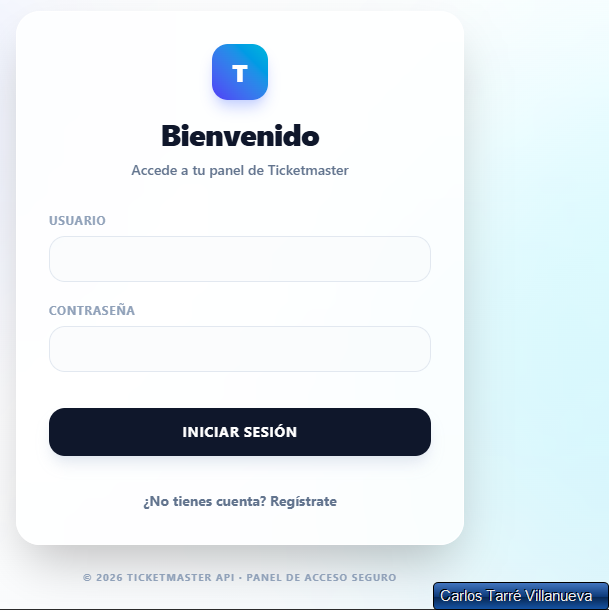
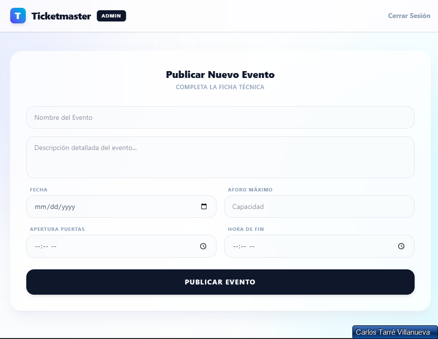
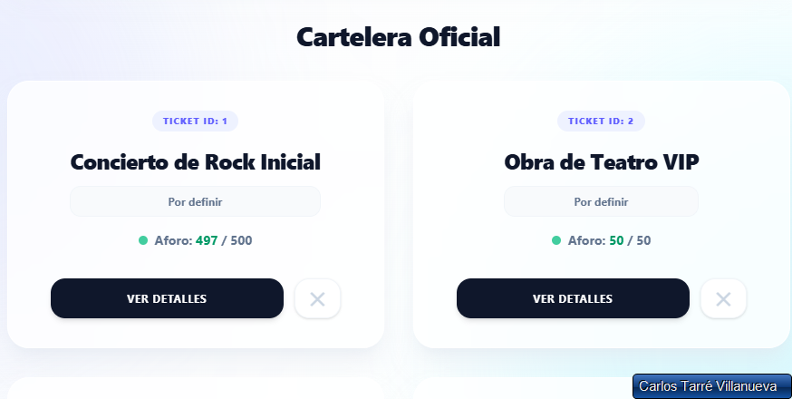
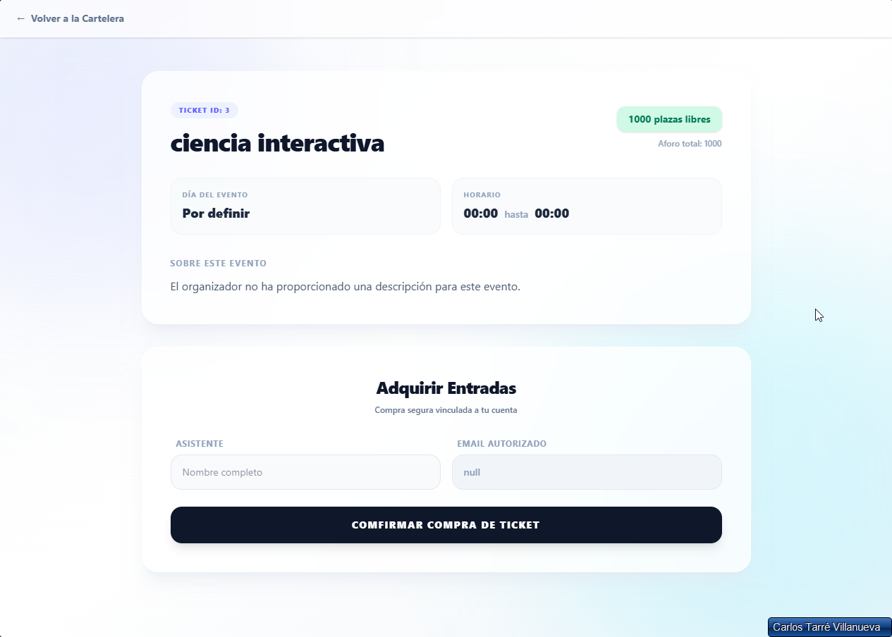
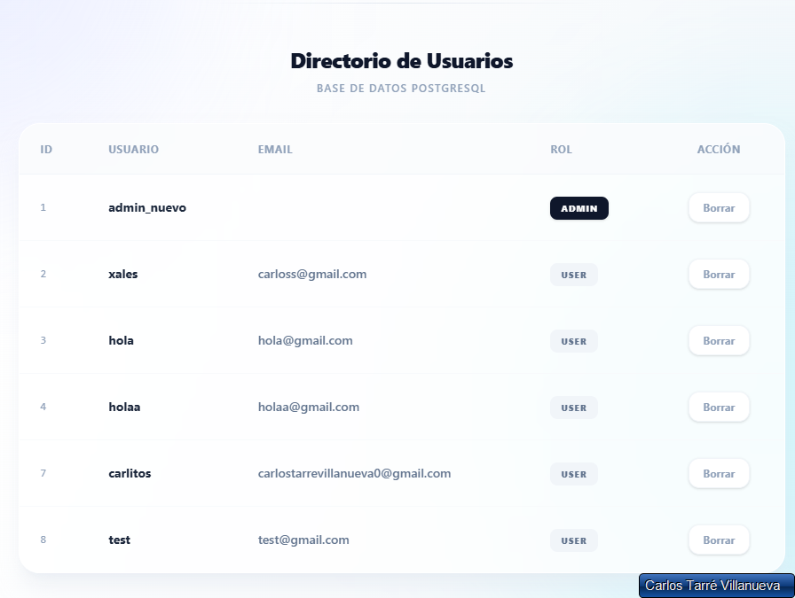
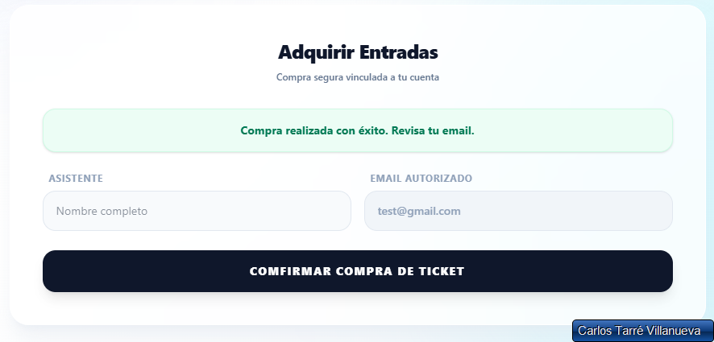
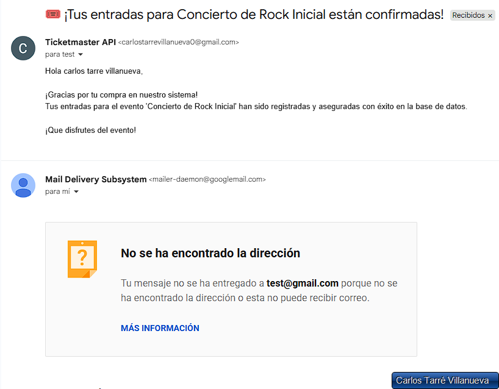
Página Web Nike
Sitio web inspirado en la marca Nike, desarrollado como práctica de frontend y backend completo. Incluye un diseño moderno, secciones interactivas y un sistema responsivo que se adapta a diferentes dispositivos. Además, cuenta con funcionalidades de usuario y administrador, carrito de compras y gestión de pedidos.
Roles y funcionalidades
- Usuario: navegar productos, añadir al carrito, proceder a la compra, ver historial de pedidos.
- Administrador: añadir, editar y eliminar productos, ver pedidos de todos los usuarios.
- Autenticación: registro, login y control de roles con JWT.
- Carrito: sincronización entre frontend y backend, actualización de cantidades, eliminación de productos.
- Pedidos: creación de órdenes, seguimiento del estado y vaciado del carrito tras la compra.
- Perfil: edición de información personal y gestión de pedidos.
Tecnologías utilizadas
- HTML5 → estructura semántica del sitio
- CSS3 → estilos modernos, responsive design y animaciones
- JavaScript (ES6+) → interactividad en el frontend
- Angular → desarrollo de componentes reutilizables y SPA
- Node.js & npm → entorno de ejecución y gestión de dependencias
- Express.js → configuración del backend y API REST
- MySQL → gestión de base de datos y almacenamiento de usuarios/productos/pedidos
- Git & GitHub → control de versiones y repositorio
- Cypress → pruebas end-to-end para verificar funcionalidades
Cómo ejecutar el proyecto
- Clonar el repositorio:
git clone https://github.com/Carlostarre/NikeCypress.git - Instalar dependencias:
- Frontend (Angular - carpeta
pixar-web):npm installynpm install -g @angular/clisi no tienes Angular CLI. - Backend (Node.js - carpeta
backend):npm install
- Frontend (Angular - carpeta
- Configurar base de datos MySQL:
- Abrir XAMPP y asegurarse de que MySQL esté iniciado.
- Crear la base de datos:
CREATE DATABASE nike_store; - Crear las tablas correspondientes ejecutando el script SQL incluido en el proyecto:
USE nike_store; CREATE TABLE users ( id INT AUTO_INCREMENT PRIMARY KEY, name VARCHAR(100) NOT NULL, email VARCHAR(100) NOT NULL UNIQUE, password VARCHAR(255) NOT NULL, isAdmin BOOLEAN DEFAULT 0, createdAt TIMESTAMP DEFAULT CURRENT_TIMESTAMP ); CREATE TABLE products ( id INT AUTO_INCREMENT PRIMARY KEY, name VARCHAR(255) NOT NULL, description TEXT, price DECIMAL(10,2) NOT NULL, stock INT DEFAULT 0, image VARCHAR(255), createdAt TIMESTAMP DEFAULT CURRENT_TIMESTAMP ); CREATE TABLE cart ( id INT AUTO_INCREMENT PRIMARY KEY, userId INT NOT NULL, productId INT NOT NULL, quantity INT DEFAULT 1, FOREIGN KEY (userId) REFERENCES users(id) ON DELETE CASCADE, FOREIGN KEY (productId) REFERENCES products(id) ON DELETE CASCADE ); - Iniciar backend:
npm starten la carpetabackend. Servidor disponible enhttp://localhost:3000. - Iniciar frontend:
ng serveen la carpetapixar-web. Abrirhttp://localhost:4200en el navegador. - Configurar usuario administrador:
- Crear un usuario desde la web.
- Modificarlo a administrador en la base de datos:
UPDATE users SET isAdmin = 1 WHERE email = 'tu-email@example.com';
Capturas de pantalla
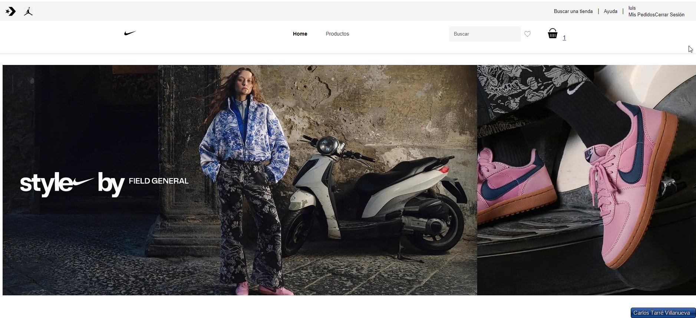
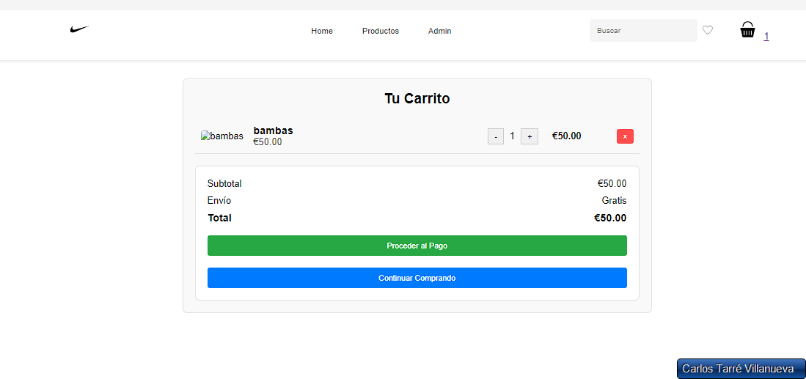

FireplayGames
Plataforma web de exploración y gestión de videojuegos con autenticación, favoritos, carrito de juegos y datos del usuario integrados. Presenta un diseño moderno, dinámico y totalmente adaptado a dispositivos móviles, consumiendo datos en tiempo real mediante integraciones externas.
Roles y funcionalidades
- Autenticación: Registro seguro e inicio de sesión de usuarios gestionado de forma nativa con Firebase Auth.
- Catálogo Dinámico: Búsqueda avanzada de títulos por nombre, género, plataforma o fechas utilizando la API externa de RAWG.
- Interactividad completa: Gestión fluida del almacenamiento de videojuegos favoritos y el carrito de compras dentro de colecciones de base de datos.
- Perfil de Usuario: Panel privado para editar la información personal del cliente y visualizar su historial guardado de favoritos.
Tecnologías utilizadas
- Next.js → Framework de React utilizado para implementar rutas dinámicas y renderizado óptimo
- React & TypeScript → Creación de la interfaz mediante componentes reutilizables con tipado estático seguro
- Firebase & Firestore → Ecosistema cloud empleado para la autenticación y base de datos NoSQL en tiempo real
- RAWG API → Integración de servicios externos para la extracción masiva de datos y capturas de videojuegos
- Tailwind CSS → Framework de estilos utilizado para agilizar un diseño responsivo y moderno
- Git & GitHub → Herramientas aplicadas para el control de versiones distribuidas del código fuente
Cómo ejecutar el proyecto
- Clonar el repositorio:
git clone https://github.com/Carlostarre/FirebaseGames1.git - Instalar dependencias: Inicializar los paquetes necesarios ejecutando
npm installin tu consola. - Variables de entorno: Crear un archivo local
.env.localcon tus credenciales privadas de Firebase y RAWG API. - Iniciar servidor local: Ejecutar el comando de desarrollo
npm run devpara levantar la app enhttp://localhost:3000.
Capturas de pantalla
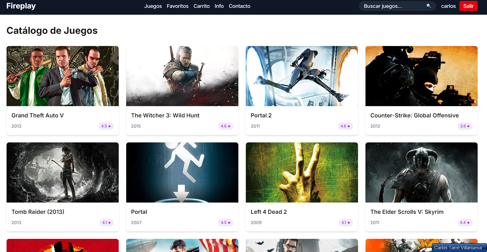
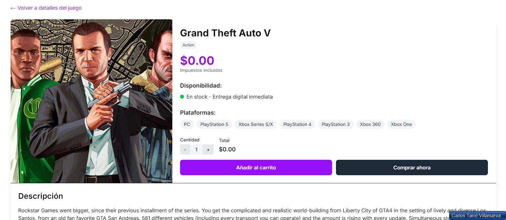
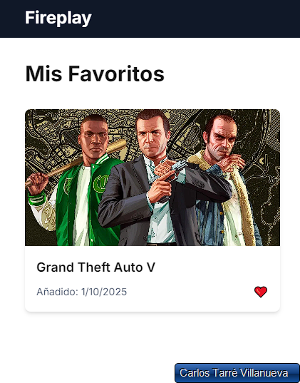